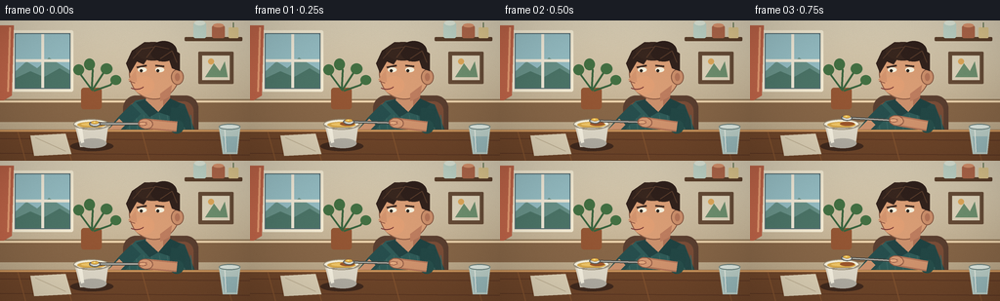
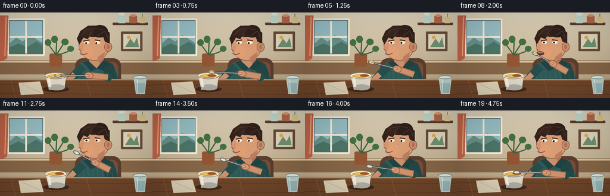

CODING AGENTS AS PIXEL WORLD MODELS
traex/GPT-5.6-Sol · motion_rationality_0028
点击播放 · 原生 RGB 像素
逐轮保存的候选
回放视频、检查图与代码变化。
每份候选均可单独播放。实际图片检查记录在下方工具轨迹中。
候选 01播放与检查图
点击播放 · 原生 RGB 像素


展开代码变化
--- 上一保存版本 +++ 本次保存版本 @@ -0,0 +1,249 @@ +from pathlib import Path +import math +import numpy as np +from PIL import Image, ImageDraw, ImageFilter +import artifact_io + +W,H,N,S = 256,144,20,4 +rng = np.random.default_rng(28) + +def sc(v): return int(round(v*S)) +def box(b): return tuple(sc(x) for x in b) +def pts(p): return [(sc(x),sc(y)) for x,y in p] + +def ellipse(d,b,fill,outline=None,width=1): d.ellipse(box(b),fill=fill,outline=outline,width=sc(width) if outline else 1) +def polygon(d,p,fill): d.polygon(pts(p),fill=fill) +def line(d,p,fill,width=1,joint='curve'): d.line(pts(p),fill=fill,width=sc(width),joint=joint) +def rr(d,b,r,fill,outline=None,width=1): d.rounded_rectangle(box(b),radius=sc(r),fill=fill,outline=outline,width=sc(width)) +def bezier(p0,p1,p2,p3,n=24): + a=[] + for u in np.linspace(0,1,n): + v=1-u + a.append((v**3*p0[0]+3*v*v*u*p1[0]+3*v*u*u*p2[0]+u**3*p3[0], v**3*p0[1]+3*v*v*u*p1[1]+3*v*u*u*p2[1]+u**3*p3[1])) + return a + +def smooth(x): + x=max(0,min(1,x)); return x*x*(3-2*x) +def lerp(a,b,q): return a+(b-a)*q +def mixp(a,b,q): return (lerp(a[0],b[0],q),lerp(a[1],b[1],q)) + +def rotated_ellipse(d,cx,cy,rx,ry,ang,fill,outline=None,width=1,n=28): + ca,sa=math.cos(ang),math.sin(ang) + p=[] + for t in np.linspace(0,2*math.pi,n,endpoint=False): + x,y=rx*math.cos(t),ry*math.sin(t) + p.append((cx+x*ca-y*sa,cy+x*sa+y*ca)) + polygon(d,p,fill) + if outline: line(d,p+[p[0]],outline,width) + +def background(): + # warm, softly textured evening kitchen + y=np.linspace(0,1,H*S)[:,None,None] + top=np.array([222,211,186.],dtype=float); bot=np.array([180,158,125.],dtype=float) + arr=np.tile(top*(1-y)+bot*y,(1,W*S,1)) + noise=rng.normal(0,1.7,(H*S,W*S,1)) + arr=np.clip(arr+noise,0,255).astype(np.uint8) + im=Image.fromarray(arr,'RGB').filter(ImageFilter.GaussianBlur(sc(.25))) + d=ImageDraw.Draw(im) + # backsplash and wooden trim + line(d,[(0,81),(256,81)],(137,111,79),1) + line(d,[(0,83),(256,83)],(237,224,198),2) + # window at left, soft daylight + rr(d,(12,10,75,73),2,(87,110,116),(245,236,212),3) + # sky panes + rr(d,(16,14,71,69),1,(150,190,196)) + # hazy landscape + polygon(d,[(16,52),(27,42),(38,49),(50,38),(71,51),(71,69),(16,69)],(104,145,136)) + polygon(d,[(16,59),(31,52),(45,58),(61,49),(71,55),(71,69),(16,69)],(76,117,104)) + line(d,[(43.5,14),(43.5,69)],(241,234,216),3) + line(d,[(16,41),(71,41)],(241,234,216),3) + # curtain edge + polygon(d,[(0,5),(14,5),(12,77),(0,84)],(190,100,72)) + line(d,[(10,7),(8,73)],(232,157,116),2) + # shelf + rr(d,(189,17,248,21),1,(91,63,43)) + # jars and ceramics + rr(d,(198,2,211,18),2,(193,215,202)); ellipse(d,(199,0,210,5),(225,233,218)); + rr(d,(217,5,230,18),2,(177,104,75)); ellipse(d,(218,3,229,7),(219,149,111)) + rr(d,(234,7,244,18),1,(222,199,142)); line(d,[(239,7),(239,2)],(86,112,72),1) + # framed picture + rr(d,(203,32,239,65),1,(103,76,55)); rr(d,(207,36,235,61),0,(225,215,190)) + polygon(d,[(210,58),(219,44),(225,52),(230,42),(233,58)],(111,145,112)) + ellipse(d,(213,39,219,45),(225,170,91)) + # counter in background + polygon(d,[(0,82),(256,82),(256,104),(0,104)],(136,103,72)) + line(d,[(0,83),(256,83)],(239,213,174),2) + # plant behind subject + rr(d,(83,69,104,91),3,(148,86,52)) + for p in [((94,71),(83,56),(80,49)),((94,72),(105,55),(109,48)),((94,70),(95,51),(91,43)),((96,72),(113,66),(119,59))]: + line(d,p,(57,100,62),2) + for b in [(75,45,86,56),(103,44,115,55),(86,39,97,51),(113,56,124,66)]: ellipse(d,b,(67,112,67)) + return im + +BG=background() + +def draw_frame(f): + im=BG.copy(); d=ImageDraw.Draw(im) + # subtle wall warmth changes like natural camera exposure + # chair silhouette + rr(d,(126,77,203,143),13,(91,63,48)) + rr(d,(131,83,198,143),10,(123,78,56)) + + # movement phase + if f <= 2: + target=[(97,106),(101,104),(97,103)][f] + hand=(149+0.8*math.sin(f*2.2),106-0.8*f) + lift=0 + elif f <= 8: + q=smooth((f-2)/6) + target=mixp((97,103),(130,69),q) + # slight curved path, rises before arriving + target=(target[0]-2.0*math.sin(math.pi*q),target[1]-2.0*math.sin(math.pi*q)) + hand=mixp((149,104),(160,86),q); lift=q + elif f <= 10: + target=((130,69) if f==9 else (129,70)) + hand=((160,86) if f==9 else (160,87)); lift=1 + else: + q=smooth((f-10)/9) + target=mixp((129,70),(99,104),q) + target=(target[0]+2*math.sin(math.pi*q),target[1]-1.5*math.sin(math.pi*q)) + hand=mixp((160,87),(149,105),q); lift=1-q + + breathe=0.45*math.sin(f*0.55) + # torso: muted teal sweater with shading and collar + polygon(d,[(139,82+breathe),(165,78+breathe),(189,86+breathe),(207,132),(121,132),(125,96)],(47,91,88)) + polygon(d,[(170,80+breathe),(189,86+breathe),(207,132),(180,132)],(37,73,72)) + # soft knit stripes + for x in range(131,200,8): line(d,[(x,97),(x+4,131)],(59,103,98),1) + # neck + polygon(d,[(151,70),(174,69),(174,89),(162,94),(149,84)],(204,145,109)) + polygon(d,[(167,70),(174,69),(174,89),(167,91)],(176,114,87)) + # collar + polygon(d,[(148,81),(162,94),(153,99),(139,84)],(35,68,68)) + polygon(d,[(174,80),(162,94),(174,98),(185,85)],(32,67,66)) + + # left arm resting around the ramekin (behind tableware) + line(d,[(139,91),(126,104),(116,116)],(39,79,78),14) + line(d,[(125,104),(113,116)],(207,148,111),9) + ellipse(d,(107,111,119,122),(213,154,116)) + + # face and ear, slight head bob while swallowing + bob = -0.45*math.sin(math.pi*max(0,min(1,(f-7)/5))) + ellipse(d,(132,27+bob,184,81+bob),(218,158,118),(139,90,67),1) + ellipse(d,(175,50+bob,188,66+bob),(204,143,107),(139,90,67),1) + ellipse(d,(179,54+bob,184,62+bob),(179,116,88)) + # cheek warm tone and jaw shade + ellipse(d,(137,57+bob,158,76+bob),(224,159,117)) + polygon(d,[(164,75+bob),(176,66+bob),(174,78+bob),(164,83+bob)],(190,126,96)) + # hair mass and layered locks + polygon(d,[(133,54+bob),(129,44+bob),(135,31+bob),(148,22+bob),(169,23+bob),(184,34+bob),(184,52+bob),(176,49+bob),(172,37+bob),(163,42+bob),(154,34+bob),(147,45+bob),(140,42+bob)],(51,35,29)) + ellipse(d,(139,22+bob,174,41+bob),(57,39,31)) + ellipse(d,(154,21+bob,181,42+bob),(47,32,27)) + for p in [[(136,39+bob),(145,29+bob),(157,27+bob)],[(150,38+bob),(159,26+bob),(173,29+bob)],[(164,39+bob),(176,31+bob),(181,43+bob)]]: + line(d,p,(86,58,42),1) + # nose in 3/4 profile + polygon(d,[(139,51+bob),(131,61+bob),(140,63+bob)],(211,148,110)) + line(d,[(132,62+bob),(138,64+bob)],(151,91,70),1) + # eyebrows + line(d,[(140,48+bob),(150,46+bob)],(63,43,34),2) + line(d,[(159,46+bob),(168,47+bob)],(63,43,34),2) + # eyes look toward moving spoon; blink frame 12 + ey=(49+bob) + if f==12: + line(d,[(141,51+bob),(149,51+bob)],(71,47,39),1) + line(d,[(159,51+bob),(167,51+bob)],(71,47,39),1) + else: + ellipse(d,(141,48+bob,150,53+bob),(247,240,220)); ellipse(d,(159,48+bob,168,53+bob),(247,240,220)) + # pupil shifts down when spoon is low + px=-1.0+0.6*lift; py=1.0-0.8*lift + ellipse(d,(144+px,49+py+bob,147+px,52+py+bob),(42,36,31)) + ellipse(d,(161+px,49+py+bob,164+px,52+py+bob),(42,36,31)) + # mouth: opens in anticipation, closes while swallowing + open_amt = 0 + if 6 <= f <= 9: open_amt = [1.2,2.4,3.3,2.5][f-6] + if open_amt: + rotated_ellipse(d,139,69+bob,6,open_amt,0.05,(94,43,40),(133,72,60),1) + if open_amt>2: line(d,[(135,68+bob),(143,68+bob)],(238,185,164),1) + else: + line(d,bezier((134,69+bob),(138,71+bob),(143,71+bob),(147,68+bob)),(121,55,53),1) + if f in (10,11): line(d,[(137,72+bob),(143,72+bob)],(175,94,78),1) + + # table, rich wood, foreground + polygon(d,[(0,112),(256,112),(256,144),(0,144)],(111,70,42)) + line(d,[(0,113),(256,113)],(204,150,93),2) + for y0 in [121,136]: line(d,[(0,y0),(256,y0+2)],(91,54,35),1) + for x in [18,65,145,229]: line(d,[(x,114),(x+8,144)],(133,84,47),1) + # napkin and little teaspoon reflection shadow + polygon(d,[(31,118),(67,116),(73,137),(35,139)],(222,210,183)) + line(d,[(36,120),(67,134)],(196,181,153),1) + + # dessert ramekin shadow + ellipse(d,(72,124,116,134),(65,42,30)) + # bowl body gradient-like stacked ellipses + polygon(d,[(76,105),(111,105),(108,128),(82,130)],(224,218,202)) + ellipse(d,(81,121,109,131),(178,174,164)) + ellipse(d,(75,101,112,112),(247,241,220),(151,139,116),1) + ellipse(d,(79,104,108,110),(218,170,75)) + # custard highlight and caramel pool + ellipse(d,(83,105,102,108),(240,198,103)) + ellipse(d,(92,104,107,108),(157,87,44)) + # bowl side shine + polygon(d,[(79,110),(84,111),(86,125),(83,126)],(247,242,226)) + + # right upper arm/sleeve, then exposed forearm following hand + shoulder=(183,90+breathe) + elbow=mixp((181,109),(184,100),lift) + line(d,[shoulder,elbow],(35,72,70),16) + ellipse(d,(elbow[0]-7,elbow[1]-7,elbow[0]+7,elbow[1]+7),(39,79,76)) + # skin forearm tapered look with shadow and highlight + line(d,[elbow,hand],(179,117,88),11) + line(d,[elbow,(lerp(elbow[0],hand[0],.9),lerp(elbow[1],hand[1],.9))],(211,149,111),8) + + # spoon is behind gripping fingers but in front of body/bowl + dx=target[0]-hand[0]; dy=target[1]-hand[1]; ang=math.atan2(dy,dx) + # shadow + steel handle + line(d,[hand,target],(80,78,73),3) + line(d,[hand,target],(210,213,205),1) + # spoon bowl at target aligned with handle + rotated_ellipse(d,target[0],target[1],5.3,2.7,ang,(187,191,187),(89,91,88),1) + rotated_ellipse(d,target[0]-.6*math.cos(ang),target[1]-.6*math.sin(ang),3.8,1.6,ang,(226,229,221)) + # pudding stays on spoon until bite; visible mound during lift + if f <= 8: + offx=-0.4*math.sin(ang); offy=0.4*math.cos(ang) + rotated_ellipse(d,target[0]+offx,target[1]+offy-1.0,3.8,1.7,ang,(231,185,76),(160,105,44),.5) + ellipse(d,(target[0]-1.5,target[1]-2.5,target[0]+.5,target[1]-1),(250,218,126)) + + # gripping hand and fingers over handle + rotated_ellipse(d,hand[0],hand[1],7.2,5.2,ang+0.12,(215,154,116),(147,92,70),1) + # thumb wraps over utensil + tx=hand[0]+3.0*math.cos(ang); ty=hand[1]+3.0*math.sin(ang) + rotated_ellipse(d,tx,ty,4.0,1.8,ang,(230,170,128),(156,96,72),.7) + # finger creases + for k in (-1.5,1.0): + cx=hand[0]+k*math.sin(ang); cy=hand[1]-k*math.cos(ang) + line(d,[(cx-1.5*math.cos(ang),cy-1.5*math.sin(ang)),(cx+1.0*math.cos(ang),cy+1.0*math.sin(ang))],(176,113,87),.6) + + # front rim hides spoon slightly while scooping and enhances depth + if f<=3 or f>=18: + line(d,[(76,107),(81,110),(106,110),(111,107)],(164,153,133),1) + # contact cue: lip overlaps spoon tip at bite + if f in (9,10): line(d,[(133,69+bob),(137,70+bob)],(126,55,52),2) + + # foreground glass at far right adds depth + polygon(d,[(224,109),(246,109),(243,137),(228,137)],(190,210,203)) + ellipse(d,(224,106,246,112),(225,235,227),(109,132,128),1) + polygon(d,[(228,119),(243,119),(242,135),(230,135)],(154,188,190)) + line(d,[(230,112),(231,135)],(238,244,235),1) + + # warm vignette / very subtle film grain at final resolution + im=im.resize((W,H),Image.Resampling.LANCZOS) + a=np.asarray(im).astype(np.float32) + yy,xx=np.mgrid[0:H,0:W] + vig=1-0.10*((xx-W/2)/(W/2))**2-0.08*((yy-H/2)/(H/2))**2 + a*=vig[...,None] + local_rng=np.random.default_rng(800+f) + a += local_rng.normal(0,0.45,a.shape[:2])[...,None] + return np.clip(a,0,255).astype(np.uint8) + +frames=np.stack([draw_frame(i) for i in range(N)]) +artifact_io.save(frames,Path(__file__).resolve().parent)
可观测工具轨迹
实际执行的命令与返回图片。
命令 1exit 0
/bin/bash -lc "cat prompt.txt && printf '\\n---RULES---\\n' && cat GENERATION_RULES.md && printf '\\n---SPEC---\\n' && cat task_spec.json"
命令 2exit 0
/bin/bash -lc "find . -maxdepth 2 -type f -printf '%p\\n' | sort"
命令 3exit 0
/bin/bash -lc 'cat artifact_io.py'
命令 4exit 0
/bin/bash -lc "cat > generate.py <<'PY'
from pathlib import Path
import math
import numpy as np
from PIL import Image, ImageDraw, ImageFilter
import artifact_io
W,H,N,S = 256,144,20,4
rng = np.random.default_rng(28)
def sc(v): return int(round(v*S))
def box(b): return tuple(sc(x) for x in b)
def pts(p): return [(sc(x),sc(y)) for x,y in p]
def ellipse(d,b,fill,outline=None,width=1): d.ellipse(box(b),fill=fill,outline=outline,width=sc(width) if outline else 1)
def polygon(d,p,fill): d.polygon(pts(p),fill=fill)
def line(d,p,fill,width=1,joint='curve'): d.line(pts(p),fill=fill,width=sc(width),joint=joint)
def rr(d,b,r,fill,outline=None,width=1): d.rounded_rectangle(box(b),radius=sc(r),fill=fill,outline=outline,width=sc(width))
def bezier(p0,p1,p2,p3,n=24):
a=[]
for u in np.linspace(0,1,n):
v=1-u
a.append((v**3*p0[0]+3*v*v*u*p1[0]+3*v*u*u*p2[0]+u**3*p3[0], v**3*p0[1]+3*v*v*u*p1[1]+3*v*u*u*p2[1]+u**3*p3[1]))
return a
def smooth(x):
x=max(0,min(1,x)); return x*x*(3-2*x)
def lerp(a,b,q): return a+(b-a)*q
def mixp(a,b,q): return (lerp(a[0],b[0],q),lerp(a[1],b[1],q))
def rotated_ellipse(d,cx,cy,rx,ry,ang,fill,outline=None,width=1,n=28):
ca,sa=math.cos(ang),math.sin(ang)
p=[]
for t in np.linspace(0,2*math.pi,n,endpoint=False):
x,y=rx*math.cos(t),ry*math.sin(t)
p.append((cx+x*ca-y*sa,cy+x*sa+y*ca))
polygon(d,p,fill)
if outline: line(d,p+[p[0]],outline,width)
def background():
# warm, softly textured evening kitchen
y=np.linspace(0,1,H*S)[:,None,None]
top=np.array([222,211,186.],dtype=float); bot=np.array([180,158,125.],dtype=float)
arr=np.tile(top*(1-y)+bot*y,(1,W*S,1))
noise=rng.normal(0,1.7,(H*S,W*S,1))
arr=np.clip(arr+noise,0,255).astype(np.uint8)
im=Image.fromarray(arr,'RGB').filter(ImageFilter.GaussianBlur(sc(.25)))
d=ImageDraw.Draw(im)
# backsplash and wooden trim
line(d,[(0,81),(256,81)],(137,111,79),1)
line(d,[(0,83),(256,83)],(237,224,198),2)
# window at left, soft daylight
rr(d,(12,10,75,73),2,(87,110,116),(245,236,212),3)
# sky panes
rr(d,(16,14,71,69),1,(150,190,196))
# hazy landscape
polygon(d,[(16,52),(27,42),(38,49),(50,38),(71,51),(71,69),(16,69)],(104,145,136))
polygon(d,[(16,59),(31,52),(45,58),(61,49),(71,55),(71,69),(16,69)],(76,117,104))
line(d,[(43.5,14),(43.5,69)],(241,234,216),3)
line(d,[(16,41),(71,41)],(241,234,216),3)
# curtain edge
polygon(d,[(0,5),(14,5),(12,77),(0,84)],(190,100,72))
line(d,[(10,7),(8,73)],(232,157,116),2)
# shelf
rr(d,(189,17,248,21),1,(91,63,43))
# jars and ceramics
rr(d,(198,2,211,18),2,(193,215,202)); ellipse(d,(199,0,210,5),(225,233,218));
rr(d,(217,5,230,18),2,(177,104,75)); ellipse(d,(218,3,229,7),(219,149,111))
rr(d,(234,7,244,18),1,(222,199,142)); line(d,[(239,7),(239,2)],(86,112,72),1)
# framed picture
rr(d,(203,32,239,65),1,(103,76,55)); rr(d,(207,36,235,61),0,(225,215,190))
polygon(d,[(210,58),(219,44),(225,52),(230,42),(233,58)],(111,145,112))
ellipse(d,(213,39,219,45),(225,170,91))
# counter in background
polygon(d,[(0,82),(256,82),(256,104),(0,104)],(136,103,72))
line(d,[(0,83),(256,83)],(239,213,174),2)
# plant behind subject
rr(d,(83,69,104,91),3,(148,86,52))
for p in [((94,71),(83,56),(80,49)),((94,72),(105,55),(109,48)),((94,70),(95,51),(91,43)),((96,72),(113,66),(119,59))]:
line(d,p,(57,100,62),2)
for b in [(75,45,86,56),(103,44,115,55),(86,39,97,51),(113,56,124,66)]: ellipse(d,b,(67,112,67))
return im
BG=background()
def draw_frame(f):
im=BG.copy(); d=ImageDraw.Draw(im)
# subtle wall warmth changes like natural camera exposure
# chair silhouette
rr(d,(126,77,203,143),13,(91,63,48))
rr(d,(131,83,198,143),10,(123,78,56))
# movement phase
if f <= 2:
target=[(97,106),(101,104),(97,103)][f]
hand=(149+0.8*math.sin(f*2.2),106-0.8*f)
lift=0
elif f <= 8:
q=smooth((f-2)/6)
target=mixp((97,103),(130,69),q)
# slight curved path, rises before arriving
target=(target[0]-2.0*math.sin(math.pi*q),target[1]-2.0*math.sin(math.pi*q))
hand=mixp((149,104),(160,86),q); lift=q
elif f <= 10:
target=((130,69) if f==9 else (129,70))
hand=((160,86) if f==9 else (160,87)); lift=1
else:
q=smooth((f-10)/9)
target=mixp((129,70),(99,104),q)
target=(target[0]+2*math.sin(math.pi*q),target[1]-1.5*math.sin(math.pi*q))
hand=mixp((160,87),(149,105),q); lift=1-q
breathe=0.45*math.sin(f*0.55)
# torso: muted teal sweater with shading and collar
polygon(d,[(139,82+breathe),(165,78+breathe),(189,86+breathe),(207,132),(121,132),(125,96)],(47,91,88))
polygon(d,[(170,80+breathe),(189,86+breathe),(207,132),(180,132)],(37,73,72))
# soft knit stripes
for x in range(131,200,8): line(d,[(x,97),(x+4,131)],(59,103,98),1)
# neck
polygon(d,[(151,70),(174,69),(174,89),(162,94),(149,84)],(204,145,109))
polygon(d,[(167,70),(174,69),(174,89),(167,91)],(176,114,87))
# collar
polygon(d,[(148,81),(162,94),(153,99),(139,84)],(35,68,68))
polygon(d,[(174,80),(162,94),(174,98),(185,85)],(32,67,66))
# left arm resting around the ramekin (behind tableware)
line(d,[(139,91),(126,104),(116,116)],(39,79,78),14)
line(d,[(125,104),(113,116)],(207,148,111),9)
ellipse(d,(107,111,119,122),(213,154,116))
# face and ear, slight head bob while swallowing
bob = -0.45*math.sin(math.pi*max(0,min(1,(f-7)/5)))
ellipse(d,(132,27+bob,184,81+bob),(218,158,118),(139,90,67),1)
ellipse(d,(175,50+bob,188,66+bob),(204,143,107),(139,90,67),1)
ellipse(d,(179,54+bob,184,62+bob),(179,116,88))
# cheek warm tone and jaw shade
ellipse(d,(137,57+bob,158,76+bob),(224,159,117))
polygon(d,[(164,75+bob),(176,66+bob),(174,78+bob),(164,83+bob)],(190,126,96))
# hair mass and layered locks
polygon(d,[(133,54+bob),(129,44+bob),(135,31+bob),(148,22+bob),(169,23+bob),(184,34+bob),(184,52+bob),(176,49+bob),(172,37+bob),(163,42+bob),(154,34+bob),(147,45+bob),(140,42+bob)],(51,35,29))
ellipse(d,(139,22+bob,174,41+bob),(57,39,31))
ellipse(d,(154,21+bob,181,42+bob),(47,32,27))
for p in [[(136,39+bob),(145,29+bob),(157,27+bob)],[(150,38+bob),(159,26+bob),(173,29+bob)],[(164,39+bob),(176,31+bob),(181,43+bob)]]:
line(d,p,(86,58,42),1)
# nose in 3/4 profile
polygon(d,[(139,51+bob),(131,61+bob),(140,63+bob)],(211,148,110))
line(d,[(132,62+bob),(138,64+bob)],(151,91,70),1)
# eyebrows
line(d,[(140,48+bob),(150,46+bob)],(63,43,34),2)
line(d,[(159,46+bob),(168,47+bob)],(63,43,34),2)
# eyes look toward moving spoon; blink frame 12
ey=(49+bob)
if f==12:
line(d,[(141,51+bob),(149,51+bob)],(71,47,39),1)
line(d,[(159,51+bob),(167,51+bob)],(71,47,39),1)
else:
ellipse(d,(141,48+bob,150,53+bob),(247,240,220)); ellipse(d,(159,48+bob,168,53+bob),(247,240,220))
# pupil shifts down when spoon is low
px=-1.0+0.6*lift; py=1.0-0.8*lift
ellipse(d,(144+px,49+py+bob,147+px,52+py+bob),(42,36,31))
ellipse(d,(161+px,49+py+bob,164+px,52+py+bob),(42,36,31))
# mouth: opens in anticipation, closes while swallowing
open_amt = 0
if 6 <= f <= 9: open_amt = [1.2,2.4,3.3,2.5][f-6]
if open_amt:
rotated_ellipse(d,139,69+bob,6,open_amt,0.05,(94,43,40),(133,72,60),1)
if open_amt>2: line(d,[(135,68+bob),(143,68+bob)],(238,185,164),1)
else:
line(d,bezier((134,69+bob),(138,71+bob),(143,71+bob),(147,68+bob)),(121,55,53),1)
if f in (10,11): line(d,[(137,72+bob),(143,72+bob)],(175,94,78),1)
# table, rich wood, foreground
polygon(d,[(0,112),(256,112),(256,144),(0,144)],(111,70,42))
line(d,[(0,113),(256,113)],(204,150,93),2)
for y0 in [121,136]: line(d,[(0,y0),(256,y0+2)],(91,54,35),1)
for x in [18,65,145,229]: line(d,[(x,114),(x+8,144)],(133,84,47),1)
# napkin and little teaspoon reflection shadow
polygon(d,[(31,118),(67,116),(73,137),(35,139)],(222,210,183))
line(d,[(36,120),(67,134)],(196,181,153),1)
# dessert ramekin shadow
ellipse(d,(72,124,116,134),(65,42,30))
# bowl body gradient-like stacked ellipses
polygon(d,[(76,105),(111,105),(108,128),(82,130)],(224,218,202))
ellipse(d,(81,121,109,131),(178,174,164))
ellipse(d,(75,101,112,112),(247,241,220),(151,139,116),1)
ellipse(d,(79,104,108,110),(218,170,75))
# custard highlight and caramel pool
ellipse(d,(83,105,102,108),(240,198,103))
ellipse(d,(92,104,107,108),(157,87,44))
# bowl side shine
polygon(d,[(79,110),(84,111),(86,125),(83,126)],(247,242,226))
# right upper arm/sleeve, then exposed forearm following hand
shoulder=(183,90+breathe)
elbow=mixp((181,109),(184,100),lift)
line(d,[shoulder,elbow],(35,72,70),16)
ellipse(d,(elbow[0]-7,elbow[1]-7,elbow[0]+7,elbow[1]+7),(39,79,76))
# skin forearm tapered look with shadow and highlight
line(d,[elbow,hand],(179,117,88),11)
line(d,[elbow,(lerp(elbow[0],hand[0],.9),lerp(elbow[1],hand[1],.9))],(211,149,111),8)
# spoon is behind gripping fingers but in front of body/bowl
dx=target[0]-hand[0]; dy=target[1]-hand[1]; ang=math.atan2(dy,dx)
# shadow + steel handle
line(d,[hand,target],(80,78,73),3)
line(d,[hand,target],(210,213,205),1)
# spoon bowl at target aligned with handle
rotated_ellipse(d,target[0],target[1],5.3,2.7,ang,(187,191,187),(89,91,88),1)
rotated_ellipse(d,target[0]-.6*math.cos(ang),target[1]-.6*math.sin(ang),3.8,1.6,ang,(226,229,221))
# pudding stays on spoon until bite; visible mound during lift
if f <= 8:
offx=-0.4*math.sin(ang); offy=0.4*math.cos(ang)
rotated_ellipse(d,target[0]+offx,target[1]+offy-1.0,3.8,1.7,ang,(231,185,76),(160,105,44),.5)
ellipse(d,(target[0]-1.5,target[1]-2.5,target[0]+.5,target[1]-1),(250,218,126))
# gripping hand and fingers over handle
rotated_ellipse(d,hand[0],hand[1],7.2,5.2,ang+0.12,(215,154,116),(147,92,70),1)
# thumb wraps over utensil
tx=hand[0]+3.0*math.cos(ang); ty=hand[1]+3.0*math.sin(ang)
rotated_ellipse(d,tx,ty,4.0,1.8,ang,(230,170,128),(156,96,72),.7)
# finger creases
for k in (-1.5,1.0):
cx=hand[0]+k*math.sin(ang); cy=hand[1]-k*math.cos(ang)
line(d,[(cx-1.5*math.cos(ang),cy-1.5*math.sin(ang)),(cx+1.0*math.cos(ang),cy+1.0*math.sin(ang))],(176,113,87),.6)
# front rim hides spoon slightly while scooping and enhances depth
if f<=3 or f>=18:
line(d,[(76,107),(81,110),(106,110),(111,107)],(164,153,133),1)
# contact cue: lip overlaps spoon tip at bite
if f in (9,10): line(d,[(133,69+bob),(137,70+bob)],(126,55,52),2)
# foreground glass at far right adds depth
polygon(d,[(224,109),(246,109),(243,137),(228,137)],(190,210,203))
ellipse(d,(224,106,246,112),(225,235,227),(109,132,128),1)
polygon(d,[(228,119),(243,119),(242,135),(230,135)],(154,188,190))
line(d,[(230,112),(231,135)],(238,244,235),1)
# warm vignette / very subtle film grain at final resolution
im=im.resize((W,H),Image.Resampling.LANCZOS)
a=np.asarray(im).astype(np.float32)
yy,xx=np.mgrid[0:H,0:W]
vig=1-0.10*((xx-W/2)/(W/2))**2-0.08*((yy-H/2)/(H/2))**2
a*=vig[...,None]
local_rng=np.random.default_rng(800+f)
a += local_rng.normal(0,0.45,a.shape[:2])[...,None]
return np.clip(a,0,255).astype(np.uint8)
frames=np.stack([draw_frame(i) for i in range(N)])
artifact_io.save(frames,Path(__file__).resolve().parent)
PY
python generate.py
ls -lh pixels.npz inspection.png index.html frames/00.png"视觉工具实际返回图片 1

视觉工具实际返回图片 2

保存候选 1 份；完成命令 4 次；可验证图片返回 2 张。原始 API 响应与完整日志保留在本地。